Mokshapuri Kashi
Varanasi (Kashi)
Kashi Vishwanath Corridor, Dashashwamedh Ganga Aarti, Kaal Bhairav & Sarnath.
Plan Kashi Visit॥ Har Har Mahadev · Shri Kashi Vishwanath Dham · Ganga Aarti · Subah-e-Banaras ॥
Experience the eternal city of Kashi. VIP Sugam Darshan at Shri Kashi Vishwanath Dham, grand evening Ganga Aarti at Dashashwamedh Ghat, Subah-e-Banaras sunrise boat ride, Kaal Bhairav, Annapurna Mandir & Sarnath — with private AC cabs and local pandit guides.
Kashi & Sacred Circuit
From Shri Kashi Vishwanath Corridor & Ganga Ghats to Ram Janmabhoomi & Triveni Sangam — every yatra is planned with deep reverence, comfort, and VIP temple darshan.
Kashi Vishwanath Corridor, Dashashwamedh Ganga Aarti, Kaal Bhairav & Sarnath.
Plan Kashi VisitShri Ram Janmabhoomi Mandir, Hanuman Garhi, Saryu Aarti & Kanak Bhawan.
Plan VisitHoly Triveni Sangam snan by private boat, Bade Hanuman ji & Anand Bhawan.
Plan VisitShri Krishna Janmabhoomi, Banke Bihari VIP entry & Prem Mandir light show.
Plan VisitState & City Special Tours
Book all-inclusive Varanasi packages with direct flight/train ticket coordination, handpicked hotels near Vishwanath Corridor, AC cab, and VIP entry passes.
🌐 Special Seva for Overseas Devotees & Foreign Travelers
Visiting Kashi from USA, UK, Canada, Australia, Singapore, Malaysia or Dubai? We offer seamless end-to-end arrangements for NRIs, PIOs, and international tourists — from airport transfers to VIP Kashi Vishwanath Darshan and private Ganga Aarti boat cruises.
Direct VNS Airport transfers in premium luxury AC Innova/SUVs with courteous drivers.
Government approved, English-speaking local scholar guides for ghat walks & Sarnath.
Pre-booked Kashi Vishwanath Sugam Darshan & Mangala Aarti passes for elderly family members.
Reserved private bajra/motorboat for Dashashwamedh Ganga Aarti & Subah-e-Banaras.

What we carry for you in Kashi
We don't just book tickets and rooms. From the moment you arrive at Varanasi airport or station to your last Ganga Aarti, your Kashi yatra runs on a quiet, reliable rhythm — guided, escorted, and looked after with care.
All Services & PackagesSugam Darshan VIP passes, knowledgeable local pandits, and seamless entry through the Corridor.
Hand-picked hotels near Kashi Vishwanath Corridor and Dashashwamedh Ghat with clean AC rooms.
Sunrise & evening Aarti boat rides, VNS Airport pickups, and private AC cabs across Kashi & nearby circuits.
Popular tour packages
All-inclusive, fully-guided and tailored to your dates. Tap any package for details and prices.

Kashi Vishwanath Corridor · Dashashwamedh Aarti · Sarnath · Boat Ride
 Most Popular
Most PopularKashi Vishwanath Sugam Darshan · Ganga Aarti · Kaal Bhairav · Sarnath

Kashi Vishwanath · Ganga Aarti · Ram Mandir · Hanuman Garhi
VIP Ram Mandir entry · Hanuman Garhi · Saryu Aarti
 Most loved
Most lovedKashi Vishwanath · Triveni Sangam · Ram Mandir
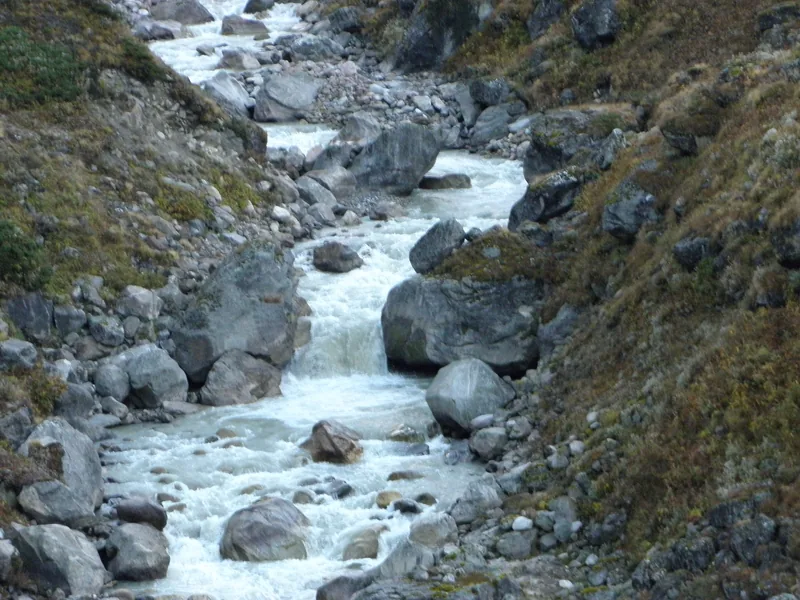
Four sacred cities at an unhurried pace
Travel Guides & Yatra Tips
Essential tips, timing slots, and booking guides to plan your perfect spiritual yatra.
Planning a luxury cruise ride in Varanasi? Read our guide on Kashi Ganga Cruise online booking, Alaknanda Cruise tickets, and timings.
Read Cruise Guide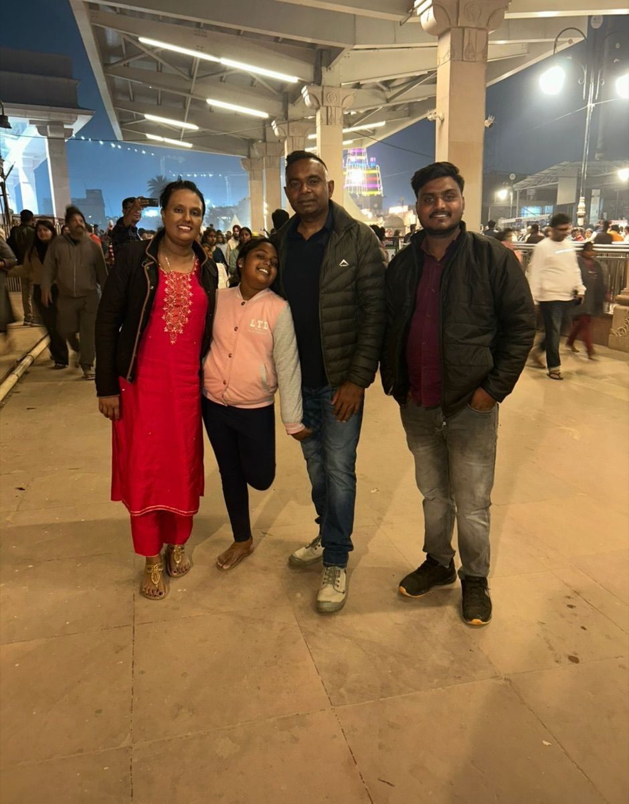
Confused about Ram Mandir VIP entry? Read our detailed guide on booking Sugam Darshan/VIP passes and priority queue tips.
Read VIP Pass Guide
Planning a yatra to Mathura Vrindavan? Read our guide on Banke Bihari VIP entry passes, Prem Mandir light show timings, and rules.
Read Braj VIP GuideVoices of devotees

Delhi NCR

Mumbai, MH
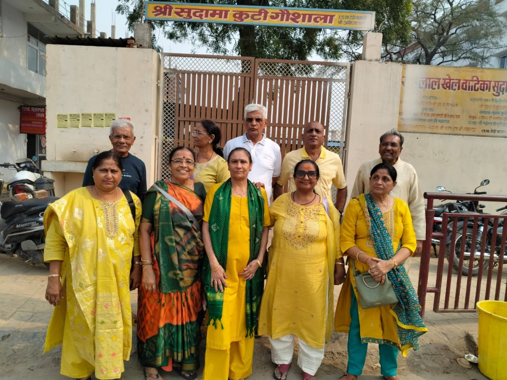
Bhopal, MP

Ahmedabad, GJ
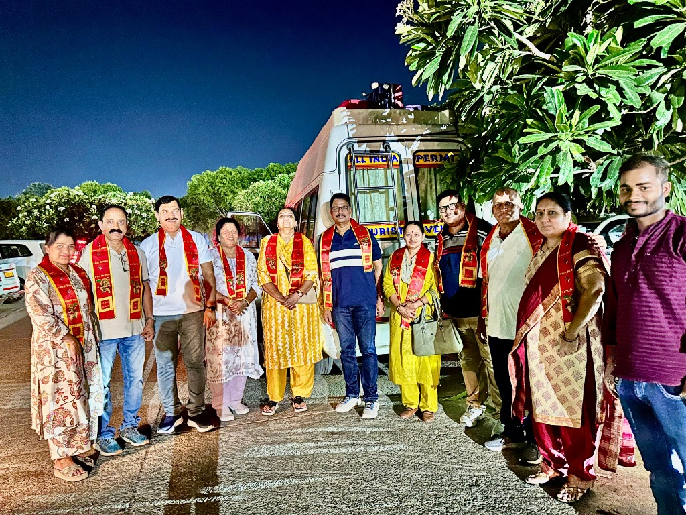
Bengaluru, KA
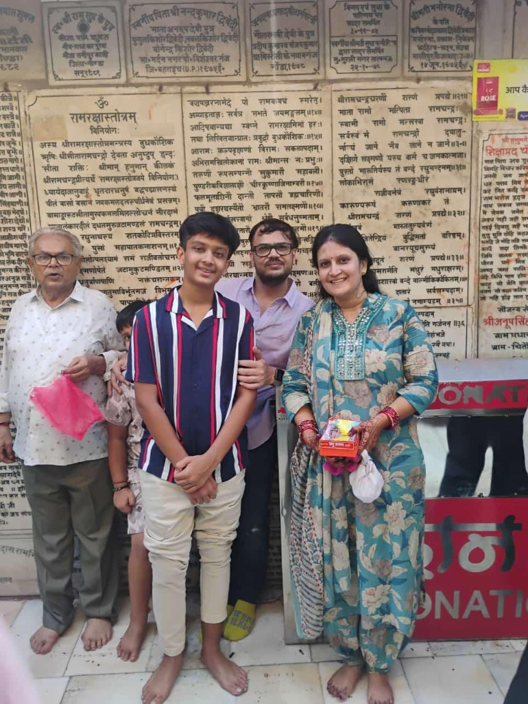
Jaipur, RJ
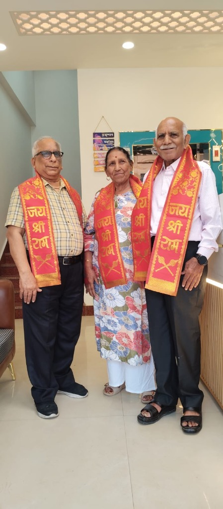
Kolkata, WB
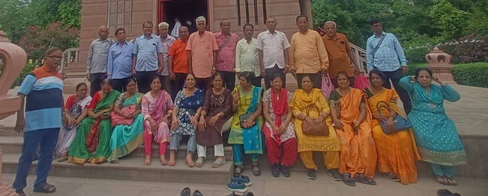
Patna, Bihar
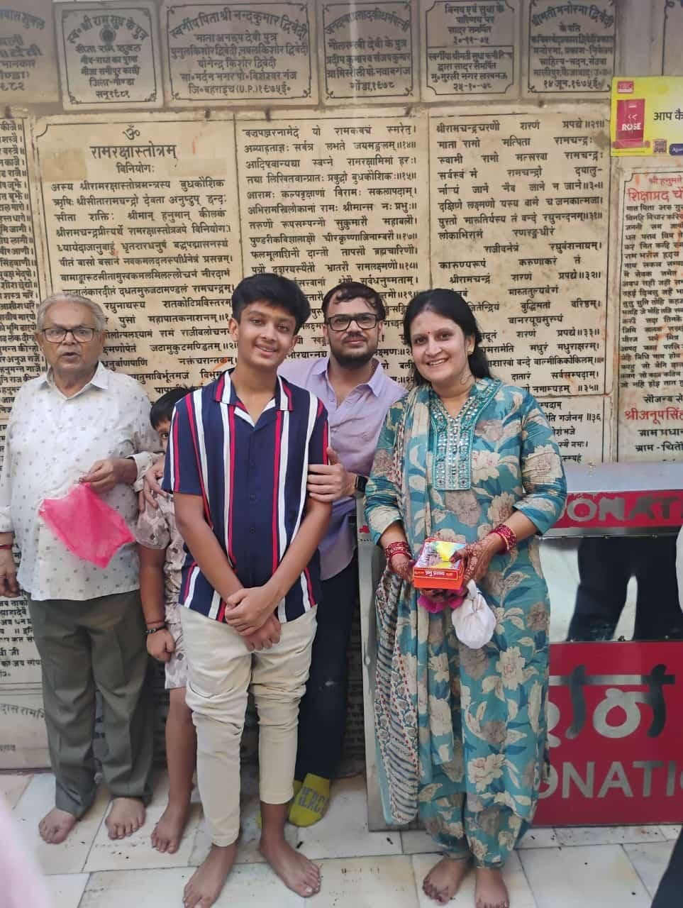
“Our recent pilgrimage was truly unforgettable. From the moment our journey began, everything was perfectly arranged with great care and professionalism. The taxi service was punctual and extremely comfortable. They organized our visit to Shri Kashi Vishwanath Dham beautifully with Sugam Darshan Pass. Sightseeing in Varanasi, Ayodhya, Prayagraj, and Chitrakoot was exceptionally well-planned.”
“It was well managed and planned trip. The car provided was good and also Kashi Vishwanath Darshan was hassle free with the sugam Darshan pass. The guide we got was really good guy.”
“We stayed for 4 Days & 3 Nights. Kashi Dharshan team managed our transportation, sightseeing, and Mandir Darshans perfectly. They even arranged Mangala Aarti Darshan on the morning of our departure. Highly dependable!”
“Three generations of our family at the Sangam together — they arranged the boat, the pandit, and even held my father’s hand on the steps. A morning we will never forget.”
Happy pilgrims
Real families, real darshan. A few of the smiles we've been blessed to be part of.
Group yatra · Kashi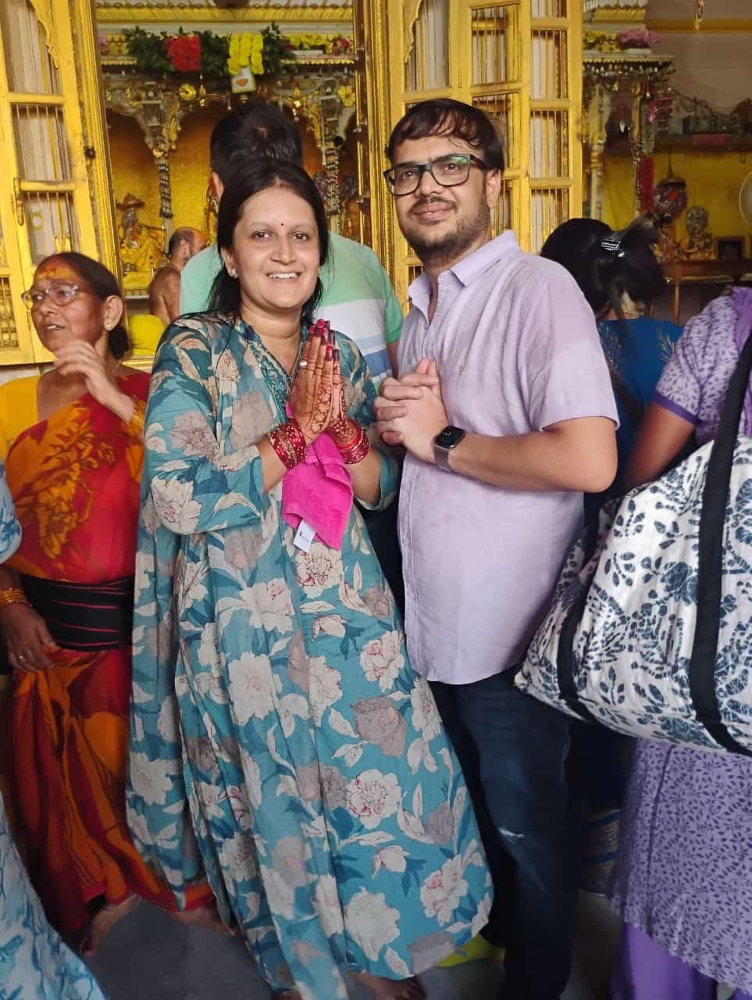
Banke Bihari · Vrindavan Triveni Sangam · Prayagraj
Triveni Sangam · Prayagraj On the road · Kashi
On the road · Kashi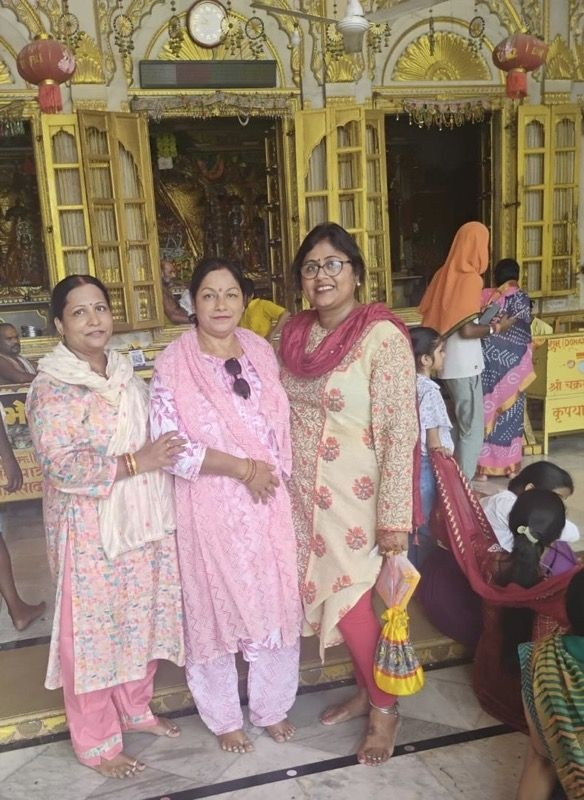
Braj darshan · Vrindavan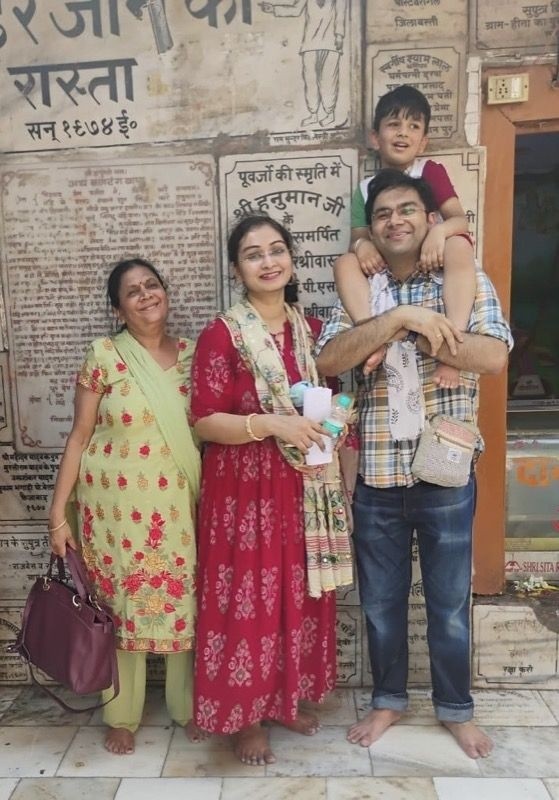
Family yatra · KashiQuick answers
Begin your yatra
Share your dates and the cities on your heart. A yatra guide will craft a personal itinerary — no obligation, no rush.